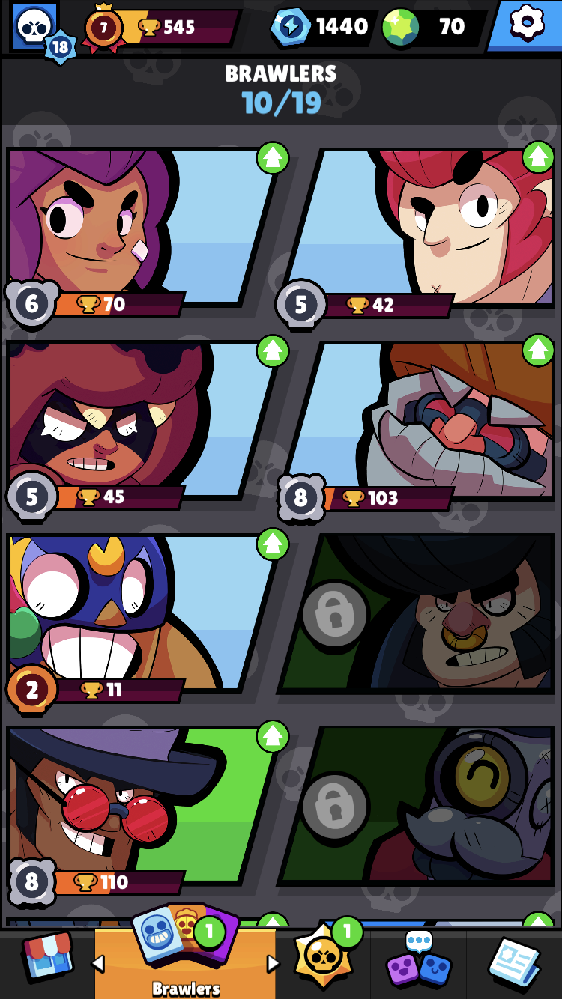
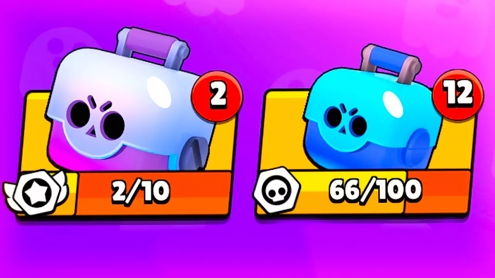

Здесь вы можете прочитать всю историю
популярности Бравл Старса
-
В 2016 году был создан
Первый прототип игры Brawl Stars в вертикальном формате под названием
Project Laser!
В нём игрок управлял персонажем нажатием на
экран, а при вхождении врага в
зону видимости персонаж атаковал
его автоматически.

-
14 июня 2017 года
состоялась официальная анонсировка игры, и на следующий день
состоялся программный запуск для iOS в Канаде.
-
19 января 2018 года
состоялся программный запуск игры в
Финляндии, Швеции, Дании,
Норвегии, Ирландии,
Сингапуре, Гонконге, Макао и Малайзии для
iOS.
-
9 марта 2018 года игра
Brawl Stars была переведена в
горизонтальную ориентацию.
-
21 мая 2018 года- в игре
Brawl Stars появились Мегаящики.

-
26 июня 2018 года был
открыт ранний доступ к игре на Android.
-
12 декабря 2018 года
состоялся официальный глобальный релиз
Stars на iOS и Android.
-
2019 год — введение Brawl
Pass, новой системы прогрессии,
которая расширила
вознаграждения.
-
2020 год — внедрение новых
бойцов, игровых режимов и обновлений ротации карт.
-
2021 год — Supercell
убирает лутбоксы и заменяет их на Призы Старр и Силовая лига.
-
12 декабря 2022 года
Мегаящики в Brawl Stars были удалены из игры.
-
2022–2023 годы— постоянные
добавления бойцов, изменения меты и введение Hypercharges.
-
В апреле 2024 года
начата коллаборация с фильмом «Годзилла».

-
Также в апреле 2024 года — был зафиксирован пик активности — 28,1 миллиона
-
5 сентября 2024 года была
начата коллаборация с мультсериалом
«Губка Боб Квадратные Штаны»
и продлилась до 2 октября 2024 года.

-
В декабре 2024 года была
начата коллаборация с мультфильмом «История игрушек»,
и в игру
был добавлен временный боец Базз Лайтер